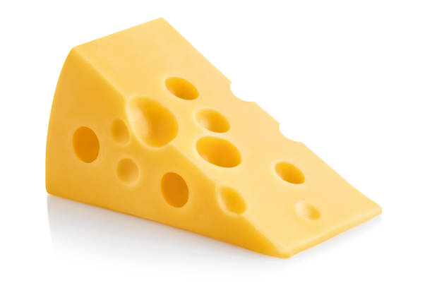
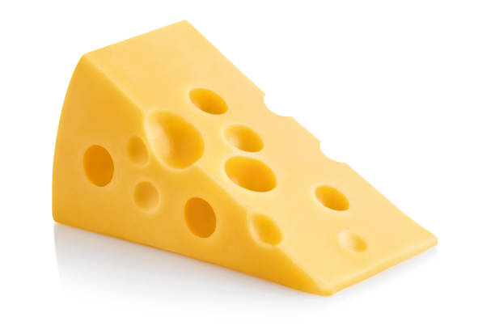

1. This is a green vegetable. It's small and round. You usually eat many of them together. What is it?

2. It's yellow, sweet, and monkeys love it. You peel it before eating. What is it?


3. It's made from flour and baked. You can toast it or use it to make a sandwich. What is it?
 


4. It's orange, long, and crunchy. Rabbits love it! What is it?